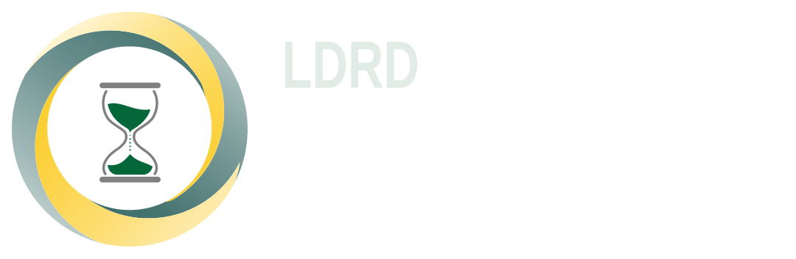

 LDRDLaboratório de Dosimetria Retrospectiva e Datação
LDRDLaboratório de Dosimetria Retrospectiva e Datação
Dosimetria, datação e caracterização de materiais.
Infraestrutura multiusuária do CIDIN, DEN/UFPE.
Pesquisa em dosimetria e datação
O LDRD integra o GDOIN, no Departamento de Energia Nuclear da UFPE, e reúne infraestrutura para a preparação de amostras e a análise de materiais de interesse arqueométrico, geológico e geomorfológico.
O laboratório desenvolve e apoia pesquisas em dosimetria retrospectiva, datação por luminescência e ressonância paramagnética eletrônica (EPR), além da caracterização de materiais.
As atividades incluem análises por fluorescência de raios X, o desenvolvimento de metodologias de datação e aplicações de termoluminescência (TL) e luminescência opticamente estimulada (OSL).
Conhecer a instrumentação
Coordenação e equipe
Docentes, pesquisadores, técnicos e estudantes atuam no preparo de amostras, na aquisição de dados e na interpretação dos resultados.
- Coordenação
- Profa. Dra. Viviane Khoury Asfora
- Vice-coordenação
- Dra. Arícia Ravane Pereira da Cruz
Quer usar o LDRD na sua pesquisa?
O laboratório recebe pesquisadores da UFPE e de outras instituições, com solicitação e aprovação da coordenação.